index / case 02 — design system
Forge
One design system behind a lead-to-cash console: 15 modules, 4 role homes.

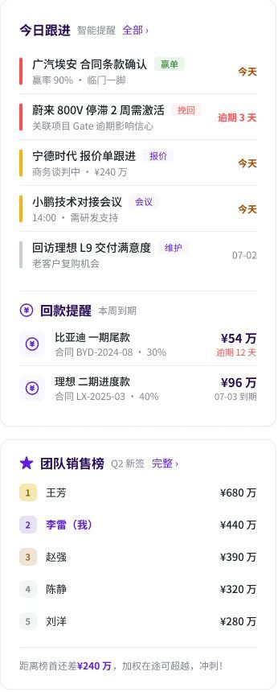
System first, screens second.
Colour, type, spacing and radius as variables; 60+ spec frames; component names match the code.
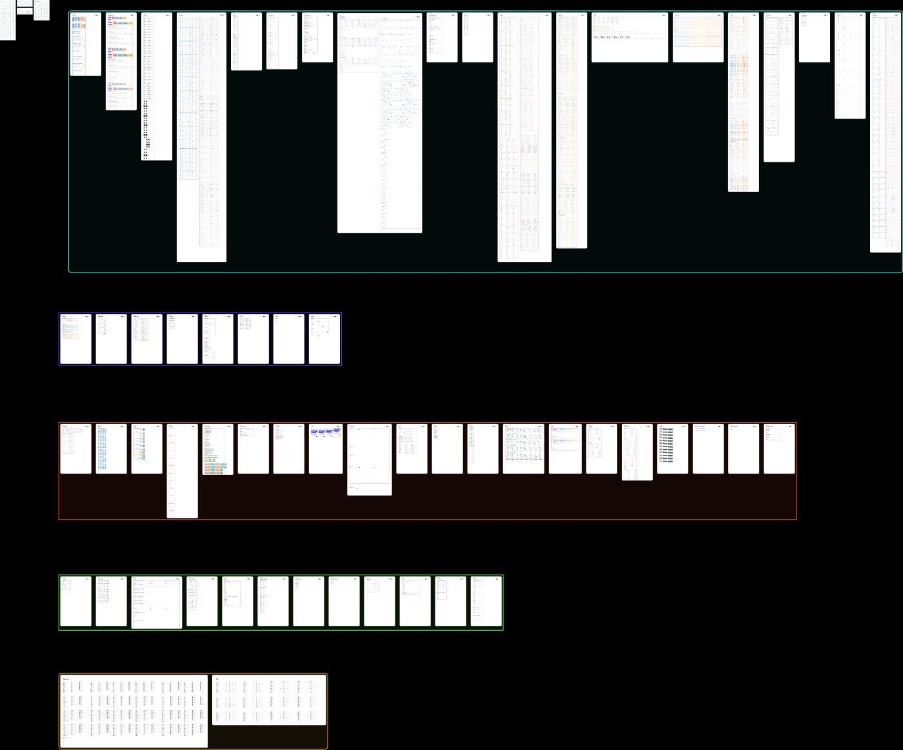
A new role is configuration, not design.
Sales, PM, engineer, admin: four homes built from the same components.
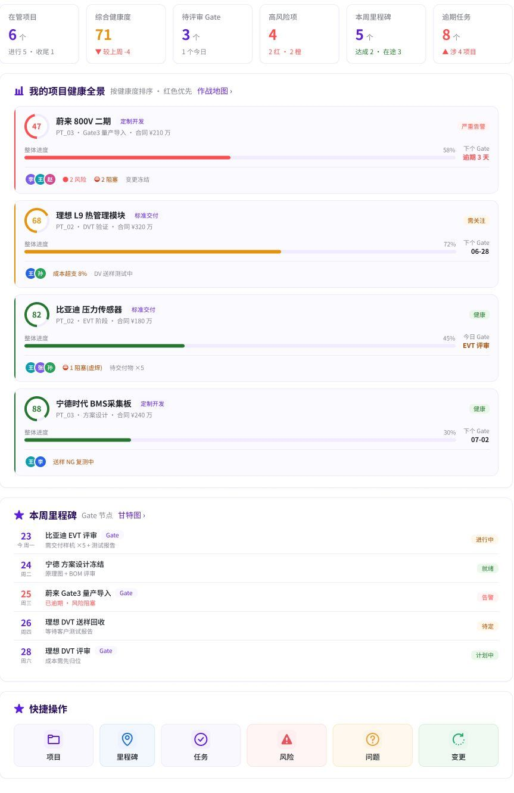
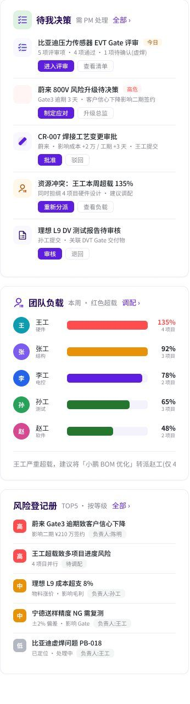
Objects first, pages follow.
Lead → customer → opportunity → quote → contract → project → task → hours → cost → payment. Custom deals run feasibility → estimate → scored review on one shared pattern set.
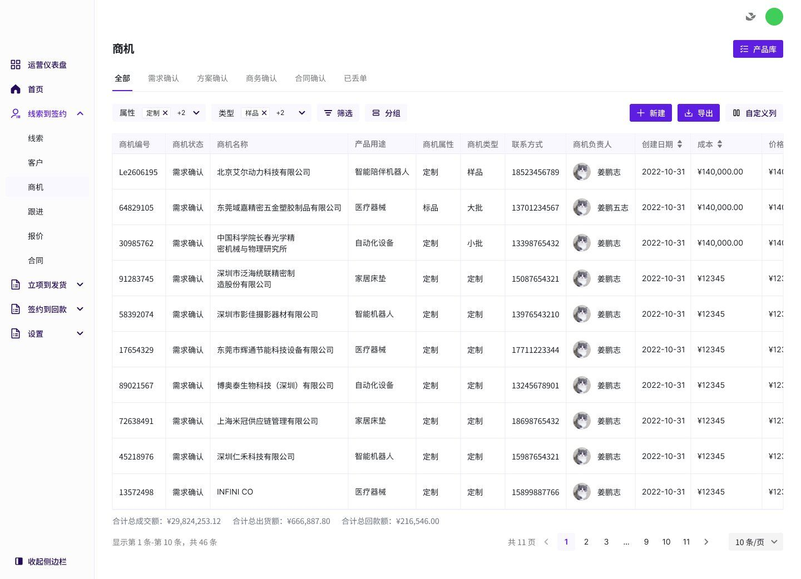
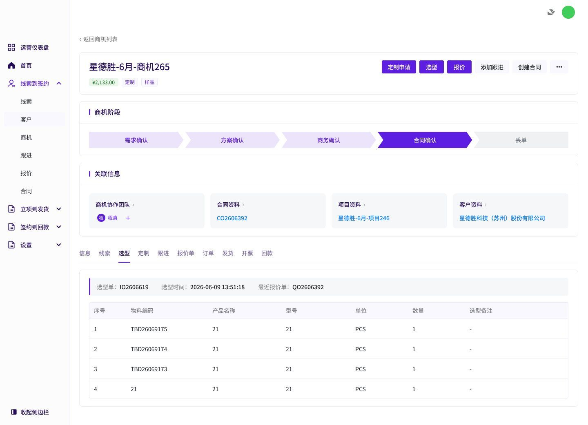
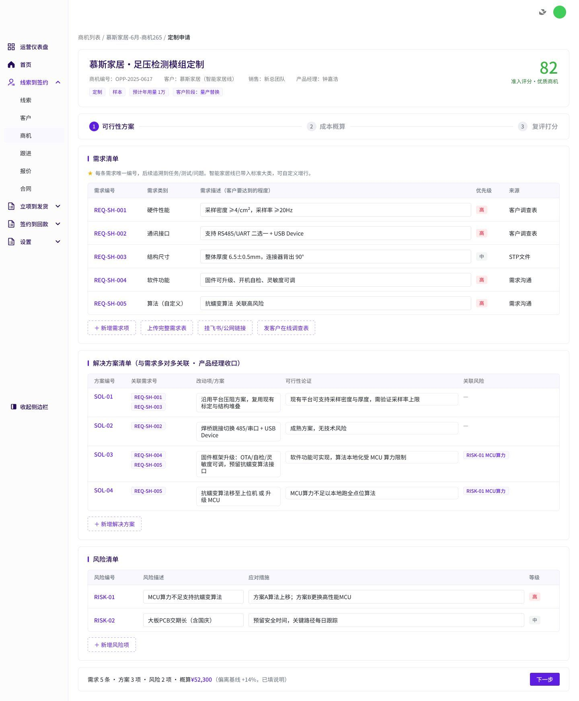
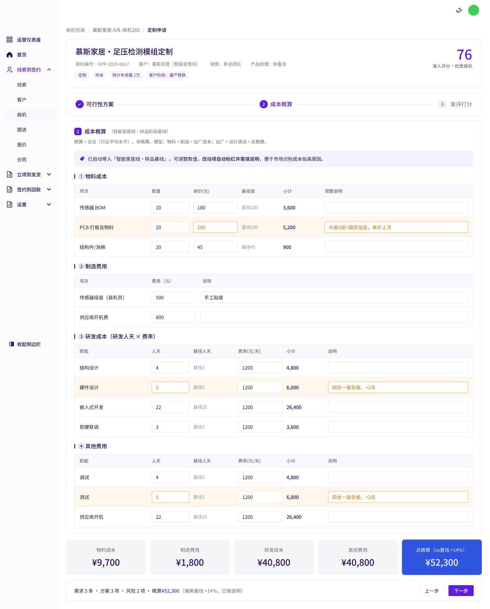
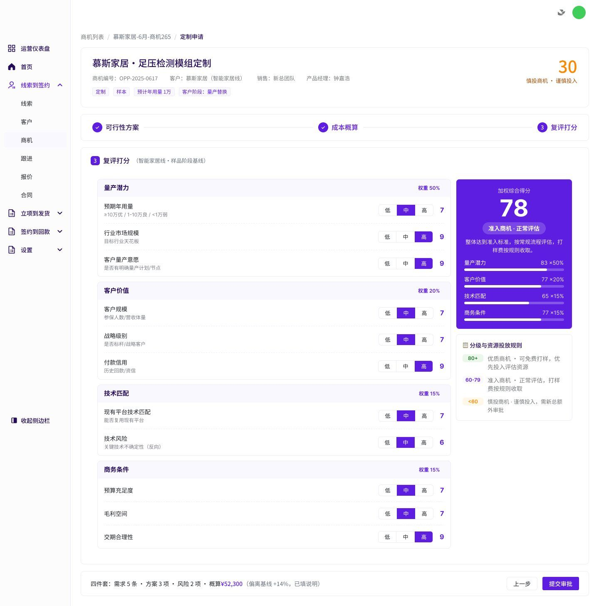
Making money legible.
Estimate, budget, actuals and final account on one timeline; variance flags itself. New patterns, zero new colours.
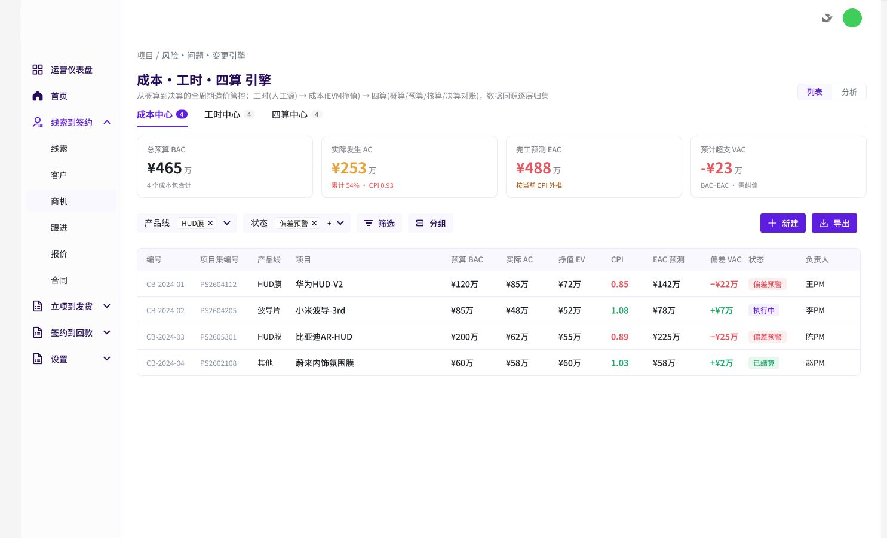
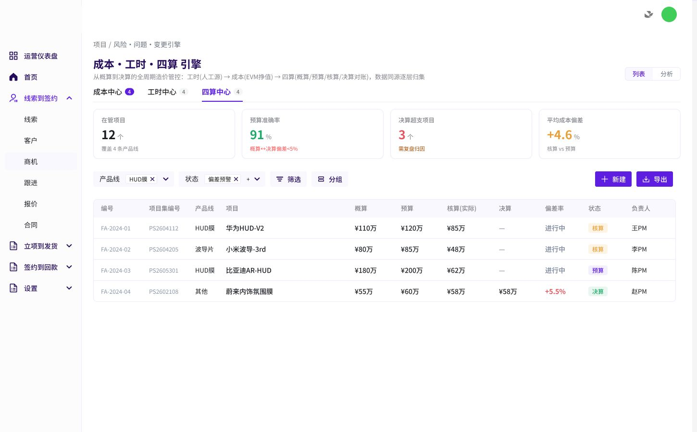
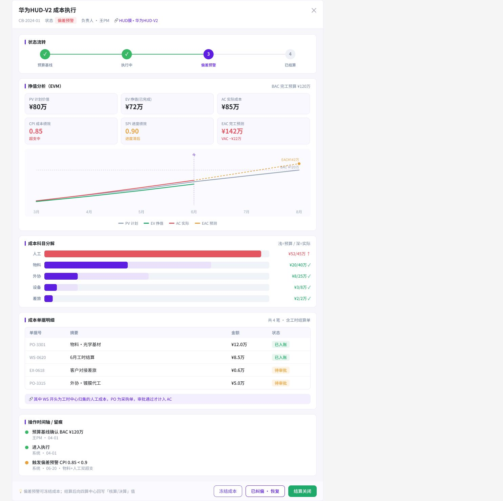
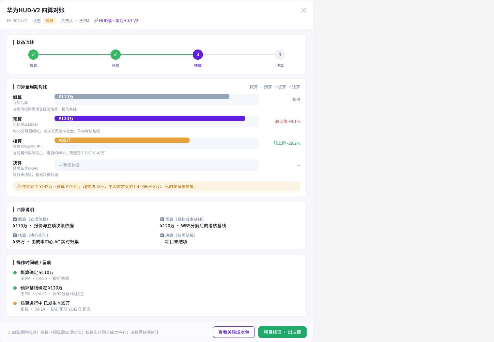
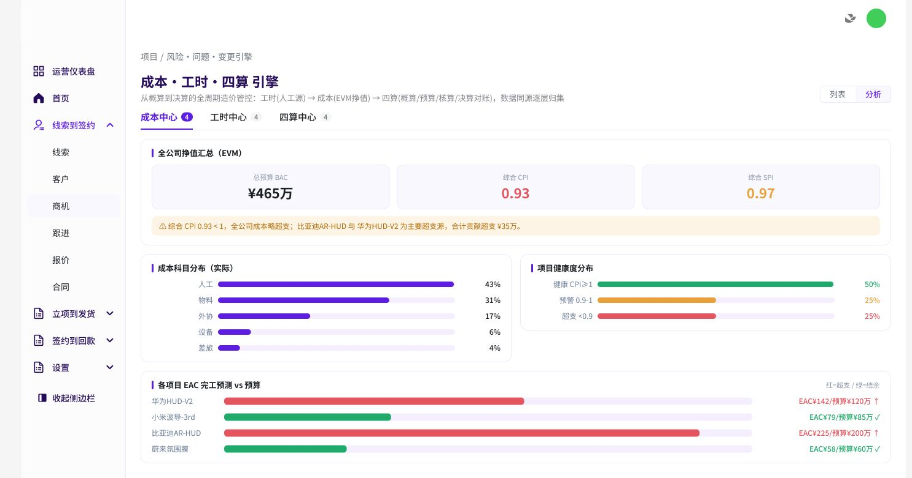
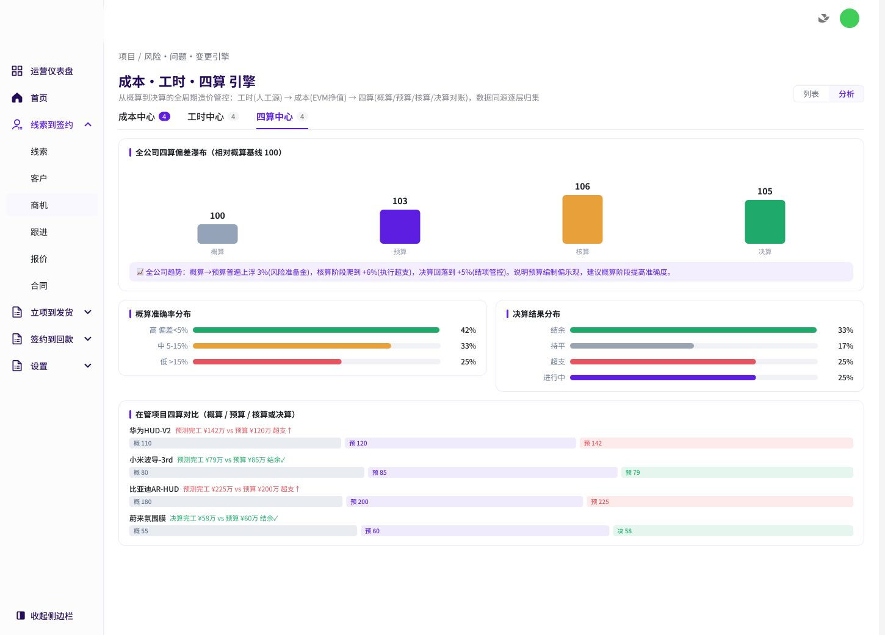
Figma source on request.
Book a walkthrough →